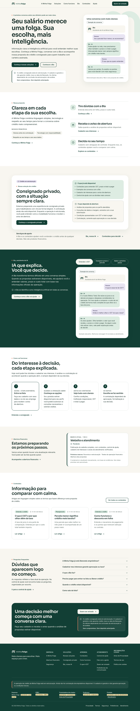
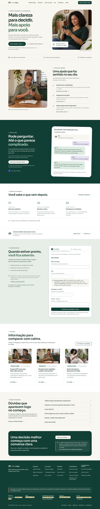

Uma experiência mais visual.
O mesmo cadastro completo.
Compare as páginas antes e depois da revisão de 26/09/2026. Fotografias ilustrativas geradas por IA, marca oficial, demonstração da Bia e cadastro com CPF, empregador e demais campos preservados.




Capturas locais, sem publicação em produção. Os canais reais da Bia dependem de configuração. Não houve pesquisa com participantes nem comprovação de aumento de conversão. Leia o relatório de validação.